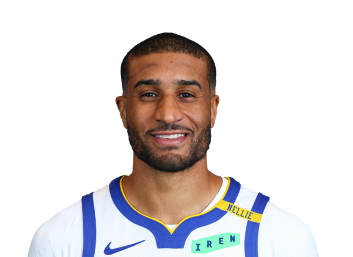

2G
#2 GOLDEN STATE WARRIORS
Brandin Podziemski
布蘭丁・波傑姆斯基
15.9PTS
5.1REB
4.7AST
7 場出賽查看完整生涯 →
金州勇士・每個數字背後，都有一個人。
從一記三分，到一段人生。追蹤場上表現，
也看見球衣之外的熱愛、家庭與成長。

從熟悉的名字，到正在發光的新面孔。每一位，都值得你認識。
布蘭丁・波傑姆斯基

亞克塞爾・倫德伯格

史蒂芬・柯瑞

卓雷蒙・格林
迪安東尼・梅爾頓
桂・桑托斯
喬治・尼昂

艾爾・霍福德
威爾・理查德
布蘭登・威廉斯

蓋瑞・裴頓二世

查爾斯・貝西

葛拉罕・艾克
LJ・克萊爾
馬勒維・里昂斯
摩西・穆迪

吉米・巴特勒

克里斯塔普斯・波爾辛吉斯
試試其他姓名、背號，或切換位置篩選。
數據為 2026–27 例行賽場均。名單包含雙向合約球員；「—」表示本季尚無出賽資料。